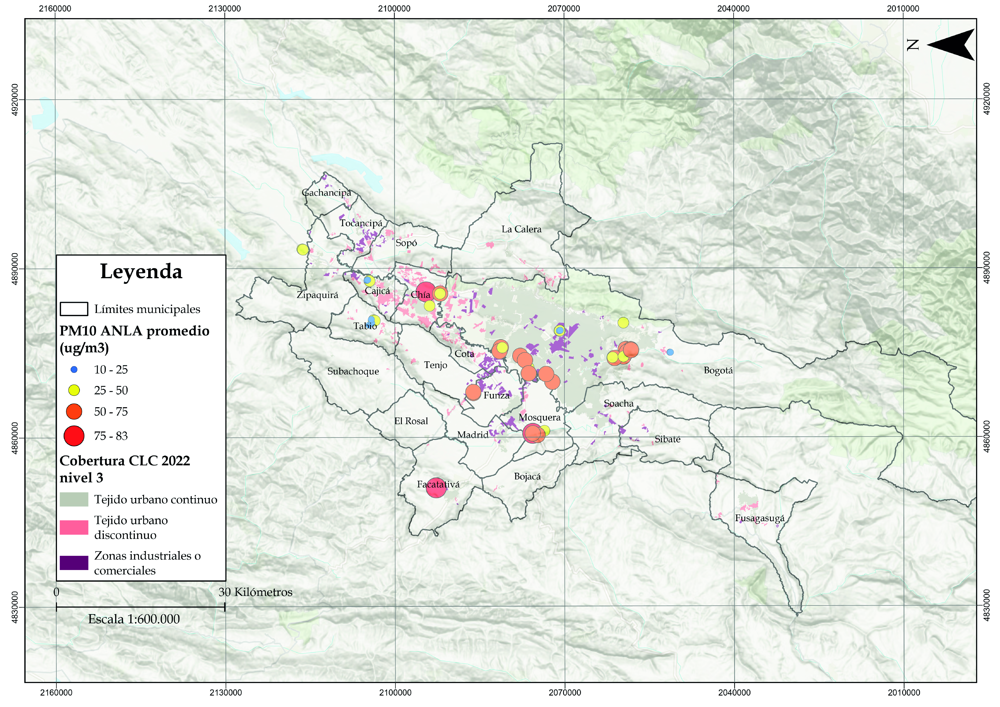

Unidad 4.2 Paisaje, identidad y sostenibilidad territorial
Las sociedades humanas, a través de sus valores y narrativas, transforman los originarios paisajes naturales en paisajes culturales. Debido a las diferentes percepciones del paisaje subjetivas para cada uno de los actores del territorio, se gestan los conflictos socioecológicos que tienen que ver con los impactos ambientales causados por el humano, cuantitativos y cualitativos, y que afectan a otros habitantes, y la calidad ambiental.
Hay muchas presiones derivadas de transformaciones territoriales históricas y actuales que tienen incidencia dentro de los conflictos socioecológicos, tales como: la globalización; el conflicto armado; los efectos de un desastre de origen natural o humano; los distintos cambios que pudieran producirse, por cualquier causa, en el escenario geopolítico internacional; el crecimiento poblacional acelerado; la migración del campo a la ciudad; los procesos de expansión urbana y de zonas industriales; los monocultivos de flores u otra vegetación que genera contaminación y eutrofización por los pesticidas y fertilizantes; la degradación ecosistémica; los ríos que se canalizan y represan; las montañas que se cortan y desplazan; el patrón de vientos modificado a escala local; los suelos que se desgastan y se secan; las especies biológicas que cambian su comportamiento —o que se extinguen—; y un clima cada vez menos predecible.
El artículo 61 de la Ley 99 de 1993 dice: “Declarase la Sabana de Bogotá, sus páramos, aguas, valles aledaños, cerros circundantes y sistemas montañosos como de interés ecológico nacional, cuya destinación prioritaria será la agropecuaria y forestal”. Sin embargo, en la Sabana de Bogotá se presentan numerosas contradicciones entre las disposiciones protectoras del artículo 61 de la Ley 99, la calidad ambiental, las dinámicas actuales de transformación territorial y los impactos ambientales en el territorio.
La gestión territorial —que incluye la gestión ambiental y social, la gestión de riesgos de desastres y la gestión del agua— debe guiar las transiciones socioecológicas hacia la sostenibilidad territorial, y debe tener como prioridad la actuación oportuna sobre los problemas, con el objeto de evitar en lo posible todos aquellos conflictos socioecológicos.
La transición socioecológica durante muchos años, no tuvo cuenta al agua y la integridad ecosistémica como determinantes ambientales de la relación naturaleza-sociedad y límites biofísicos del territorio. Los valores éticos y culturales de los habitantes del territorio a su vez son determinantes del paisaje material que se visualiza y habita. Es por esto, que para una gestión territorial que no vulnere los determinantes ambientales, prevenga o mitigue los conflictos socioecológicos, y haga frente a los desastres naturales, es necesario fijar unos valores éticos y culturales para generar un paisaje que propicie la transición socioecológica hacia la sostenibilidad territorial.
Para poder evidenciar los conflictos socioecológicos generados por transformaciones territoriales y tratar de solucionarlos con ayuda de los SIG, se cruza la información geográfica de la oferta ambiental obtenida de estudios técnicos y científicos, el potencial del territorio1 según su calidad ambiental, la ecología, agrología, geología, hidrología, clima, topografía y normas y la vocación actual de los suelos impuesta por sus habitantes, para tener una imagen de las compatibilidades, conflictos y tensiones que surgen de las interacciones en el paisaje, entre la naturaleza y la cultura.
Estos conflictos no son meramente técnicos o jurídicos, sino que reflejan narrativas culturales profundamente distintas sobre lo que el paisaje debería ser y para quién. Por ejemplo, la expansión urbana ha consumido gran parte de los suelos originalmente destinados a actividades agropecuarias o forestales, generando conflictos socioecológicos en ecosistemas estratégicos, comunidades campesinas, la seguridad hídrica y alimentaria, y formas de vida de sus habitantes.
En la cartografía existente del IGAC se puede observar: los estudios sobre la vocación, oferta ambiental y conflictos de uso del suelo, que se pueden analizar con la perspectiva de expertos y de la comunidad local, para el planteamiento de transformaciones territoriales locales ni regionales en la actualidad que puedan solucionar los conflictos ambientales y avanzar hacia la sostenibilidad territorial**.**
Mapa 10. Vocación de uso del suelo para la zona de estudio y las zonas periféricas
 Fuente: Elaboración Sociedad de Mejoras y Ornato de Bogotá con información del IGAC.
Fuente: Elaboración Sociedad de Mejoras y Ornato de Bogotá con información del IGAC.
Mapa 11. Oferta ambiental para la zona de estudio y las zonas periféricas
 Fuente: Elaboración Sociedad de Mejoras y Ornato de Bogotá con información del IGAC.
Fuente: Elaboración Sociedad de Mejoras y Ornato de Bogotá con información del IGAC.
A partir de la caracterización de la vocación del suelo y la oferta ambiental, se puede determinar si un espacio puede estar subutilizado, sobreutilizado o con un uso adecuado, e identificar los conflictos socioecológicos existentes, o en los casos en que haya un uso adecuado, los aportes técnicos y culturales que se pueden adoptar en el resto del territorio para la transición hacia la sostenibilidad territorial.
Mapa 12. Conflictos de uso del suelo para la zona de estudio y las zonas periféricas
 Fuente: Elaboración Sociedad de Mejoras y Ornato de Bogotá con información del IGAC.
Fuente: Elaboración Sociedad de Mejoras y Ornato de Bogotá con información del IGAC.
El paisaje refleja las relaciones de poder y las dinámicas históricas de apropiación que influyen en la generación de conflictos socioecológicos; es un espacio cargado de historia, conflictos y significados, donde se expresa la relación entre poder, cultura, naturaleza y territorio. Ejemplos documentados de transformaciones territoriales como el desarrollo de infraestructura en humedales, el cauce de los ríos y áreas de importancia agrícola y ecológica, la urbanización cerca a industrias o rellenos sanitarios, la ejecución de actividades económicas en páramos, o la contaminación de suelos, aire y agua, ilustran los conflictos entre la conservación de la calidad ambiental y el desarrollo territorial. Simultáneamente, la conversión de tierras agrícolas o forestales en cultivos de flores para exportación, pastos para actividad ganadera, el sellamiento del suelo para vivienda requerida, suburbanización, o la especulación inmobiliaria, evidencian cómo las dinámicas económicas y la noción de desarrollo reconfiguran tanto el paisaje como las expresiones, narrativas y valores culturales.
Estas transformaciones territoriales generan conflictos socioecológicos entre los diferentes actores —personas, colectivos, instituciones públicas y privadas—, cada uno con visiones particulares sobre el desarrollo y la conservación. Frente a estos conflictos, se plantea la necesidad de desarrollar enfoques innovadores de gestión del paisaje, desde el ambientalismo complejo, que superen las visiones fragmentarias y simplificadoras.
La sostenibilidad territorial se alcanza solucionando los conflictos socioecológicos. Su resolución depende de la capacidad de los sistemas socioecológicos para responder, sin entrar en conflicto y sin afectaciones a la calidad de vida de sus habitantes, a retos provenientes de impactos ambientales, dinámicas socioculturales o fenómenos biofísicos y geofísicos; lo cual requiere de una armonización de la oferta ambiental con la vocación del territorio.
2.1. Análisis multiescalar de los conflictos socioecológicos
La comprensión de la oferta, vocación y conflictos socioecológicos requiere considerar su manifestación en diferentes escalas espaciales con un enfoque histórico. Utilizando el agua como ejemplo, ya que es una determinante ambiental, se deben considerar las causas y los efectos de las transformaciones territoriales en toda la cuenca alta y media del río Bogotá.
A nivel local, se observan dinámicas como la transformación de humedales, la canalización en superficie y subterránea de cuerpos hídricos, ocupación de rondas de ríos urbanos o ecosistemas de la cuenca alta y media del río Bogotá, donde comunidades específicas interactúan con estos ecosistemas cargados de servicios ecosistémicos y se generan conflictos socioecológicos. En la escala regional, fenómenos como la contaminación del río Bogotá muestran cómo los impactos ambientales trascienden los límites administrativos, afectando a diversos municipios y sectores productivos.
En la escala nacional, la concentración de población, seguridad, desarrollo económico, y crecimiento empresarial no se pude seguir dando solamente en esta región, sino que se necesita una transformación que propicie la equidad y reciprocidad interregional, y unas relaciones mucho más armónicas y de simbiosis con la Colombia rural para evitar sobrepasar los límites biofísicos e hídricos del territorio dados por las determinantes ambientales.
A nivel global, factores como el cambio y variabilidad climática, la destrucción del Amazonas, o los mercados internacionales influyen decisivamente en el ciclo hídrico. Las diferencias entre los límites político-administrativos para la gestión del territorio, y las diferentes escalas espaciales de los fenómenos naturales y culturales causan conflictos socioecológicos y generan ineficiencias en la gestión del paisaje.
También se busca con este análisis multiescalar comprender las diferentes escalas temporales en las que se manifiestan las transformaciones territoriales para analizar las dinámicas del paisaje, ya que los procesos ecológicos y sociales operan en ritmos distintos.
Mientras fenómenos como la formación de suelos o la evolución de ecosistemas pueden tomar siglos, las decisiones políticas y económicas suelen responder a ciclos mucho más cortos, a veces la duración de un período de gobierno, lo cual es causa de tensiones. Por ejemplo, la degradación de un humedal, bosque o páramo puede ocurrir en pocos años debido a presiones urbanísticas, pero su recuperación ecológica podría requerir décadas. Esta disonancia temporal explica muchos de los conflictos socioecológicos en la Sabana de Bogotá, donde las transformaciones territoriales aceleradas impuestas por el desarrollo urbano y económico chocan con los tiempos lentos que toma la consolidación de resiliencia en los sistemas naturales.
Incorporar las múltiples escalas en la perspectiva espacial y temporal de las transformaciones territoriales, permite diseñar estrategias de gestión del paisaje más integrales, que respeten los ritmos y escalas espaciales de los procesos ecológicos, esenciales para mantener la calidad ambiental, armonizar el potencial y la vocación del territorio, al tiempo que se atienden las necesidades y aspiraciones de las comunidades, y los conflictos socioecológicos.
2.2. Justicia ambiental: Identificación y solución de conflictos socioecológicos para la sostenibilidad territorial
Las transformaciones territoriales producto del habitar del humano en el territorio, ineludiblemente generan impactos ambientales, tensiones entre actores y conflictos socioecológicos. El régimen ambiental y social de la tierra se ha modificado irreversiblemente como resultado de la acumulación de miles de años de transformaciones territoriales: la sociedad está obligada a reflexionar e innovar, y ello implica renegociar los valores individuales, colectivos y culturales teniendo en cuenta el rol fundamental de la naturaleza en el bienestar humano y en el del territorio.
Para esta negociación es necesario adoptar un nuevo marco ético basado en la justicia ambiental, que genere y ponga en práctica nuevas formas de relacionarnos tanto entre la sociedad como con un paisaje en constante cambio, para lograr un desarrollo humano 2 en el mundo desconocido e incierto que la humanidad ha creado.
La injusticia ambiental no es solo contaminación, sino distribución desigual de cargas y beneficios ambientales, y está relacionada con dos hechos: la desigualdad en los efectos de la degradación de la calidad ambiental y en el acceso a los recursos naturales y a los servicios ecosistémicos.
La sostenibilidad territorial depende de la capacidad de la red de interacciones socioecológicas para responder a estos dos hechos, sin entrar en conflicto y sin afectaciones a la calidad de vida de sus habitantes, para lograr la justicia ambiental en el territorio.
El proceso de búsqueda de justicia ambiental puede ayudar a construir una identidad territorial basada en la tolerancia, la solidaridad, la corresponsabilidad, la cooperación, la reciprocidad, la flexibilidad a las necesidades de cada contexto, la participación incidente, la adaptabilidad, la civilidad y el compromiso a fortalecer la resiliencia y seguridad territorial, ante los conflictos socioecológicos. Estos valores, cuando se articulan con las transformaciones territoriales, permiten consolidar una identidad territorial que reconozca, valore y aproveche la interdependencia entre los sistemas naturales y sociales, y un paisaje acorde a esto.
Esta identidad es necesaria en el contexto de crisis socioecológica y de cambio climático acelerado, cuando los efectos de los fenómenos naturales —inundaciones, movimientos en masa, avenidas torrenciales, incendios forestales—, y los impactos en la calidad ambiental incrementarán el riesgo de que los conflictos socioecológicos e injusticias ambientales sean más intensas.
El reto está en que la sociedad ejerza la justicia ambiental mediante transformaciones culturales, paisajísticas y uso de la memoria del patrimonio, para solucionar los conflictos socioecológicos y mejorar la calidad ambiental del paisaje y seguridad territorial.
A continuación, se ilustran ciertos mapas que diagnostican algunas de las injusticias ambientales que tienen lugar en el territorio que nos ocupa.
Mapas sobre justicia ambiental:
· La distribución espacial de las actividades económicas que generan mayores impactos en la calidad ambiental y su proximidad a las viviendas de las personas en diferentes lugares de la ciudad.
Mapa 13. Distribución de equipamientos, industria, minería y el relleno sanitario Doña Juana, y su relación con la justicia ambiental
 Fuente: Elaboración Sociedad de Mejoras y Ornato de Bogotá con información de la Secretaría de Hábitat de Bogotá, CAR.
Fuente: Elaboración Sociedad de Mejoras y Ornato de Bogotá con información de la Secretaría de Hábitat de Bogotá, CAR.
· La distribución espacial de zonas verdes y arbolado urbano en Bogotá que tienen impactos positivos en el bienestar para quienes habitan cerca a estos.
Mapa 14. Distribución de las zonas verdes y el arbolado urbano y su relación con la justicia ambiental
 Fuente: Elaboración Sociedad de Mejoras y Ornato de Bogotá con información de la Secretaría de Ambiente de Bogotá, SIGAU.
Fuente: Elaboración Sociedad de Mejoras y Ornato de Bogotá con información de la Secretaría de Ambiente de Bogotá, SIGAU.
· La distribución espacial de las estaciones de monitoreo de calidad del aire de Bogotá y la heterogeneidad de la calidad del aire dependiendo de la zona de la ciudad.
Mapa 15. Contaminación por PM10 y su relación con los usos urbanos e industriales en la zona de estudio

Fuente: Elaboración Sociedad de Mejoras y Ornato de Bogotá con información de ANLA e IDEAM.· La distribución de los suelos urbanizados y sellados que tienen efectos importantes en la calidad ambiental y de los suelos clasificados como propensos a amenazas naturales.
Mapa 16. Huella urbana y zonas urbanas en áreas con amenazas naturales
 Fuente: Elaboración Sociedad de Mejoras y Ornato de Bogotá con información de la CAR, Secretaría de Hábitat, Secretaría de Ambiente e IDEAM.
Fuente: Elaboración Sociedad de Mejoras y Ornato de Bogotá con información de la CAR, Secretaría de Hábitat, Secretaría de Ambiente e IDEAM.
Este análisis de la distribución espacial de actividades humanas, expresiones culturales, características biofísicas, geofísicas y fenómenos naturales que ocurren diferencialmente a través del territorio, ayuda a identificar los distintos conflictos socioecológicos e injusticias ambientales para darles solución mediante transformaciones territoriales, que apoyen la transición sociocioecológica hacia la sostenibilidad territorial.
Sección 4.2.3 La sostenibilidad territorial en Bogotá Sección 4.3.2 La Región hídrica de Bogotá y su Estructura Ecológica Principal Sección 4.3.3 Evolución de la ocupación del territorio Sección 5.1.2 Sistema de Servicios Públicos Sección 5.1.3 Sistema de espacio público Sección 5.2.1 Sistema de equipamientos Sección 5.2.2 Sistema de hábitat
Footnotes
-
Mapas e información del estado de la Sabana con datos del siglo pasado obtenidos por el profesor Van Der Hammen. Ver Thomas Van Der Hammen. Plan ambiental de la Cuenca Alta del río Bogotá: Análisis y orientaciones para el Ordenamiento Territorial (Bogotá: CAR, 1999), 141-142. ↩
-
Como lo plantea Amartya Sen, es el desarrollo humano, el proceso de la expansión de las libertades humanas, y su evaluación ha de inspirarse en esta consideración. El desarrollo no solo se mide por indicadores económicos como el PIB, sino también por la ampliación de las oportunidades y capacidades de las personas para llevar la vida que valoran; la libertad es tanto el fin como el medio para lograr un verdadero desarrollo de la humanidad. Conceptos como el Buen Vivir, desarrollo humano, los derechos de infancia, los desastres evitados, la pobreza multidimensional o el desarrollo sostenible buscan una visión más holística del bienestar y el desarrollo (Sen, 2004). ↩